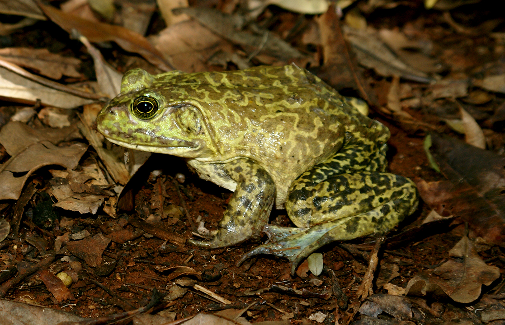

Espécie de grande porte. Coloração da cabeça verde, escurecendo para o marrom até as pernas, corpo coberto por manchas escuras. É uma espécie exótica, originária do leste dos Estados Unidos e Canadá, foi trazida para o Brasil com a intenção de produção de carne de rã para alimentação. Ocorre ao longo de grande parte do Brasil, principalmente nas regiões sul e sudeste. Seu som lembra muito o mugido de um boi ou touro, o que deu origem ao seu nome popular.
É comum que algumas rãs escapem dos ranários, se multiplicando na natureza e tornando-se invasoras. Competem por espaço, alimento e inclusive se alimentam de espécies nativas de anfíbios, podendo alterar suas populações. Habitam poças, lagos e açudes, tanto ambientes abertos quanto florestados, às margens do corpo d'água, com parte do corpo submerso.
